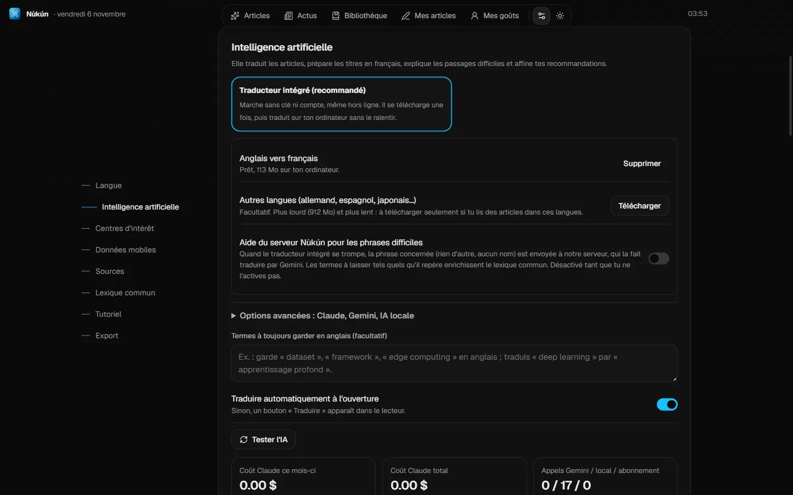
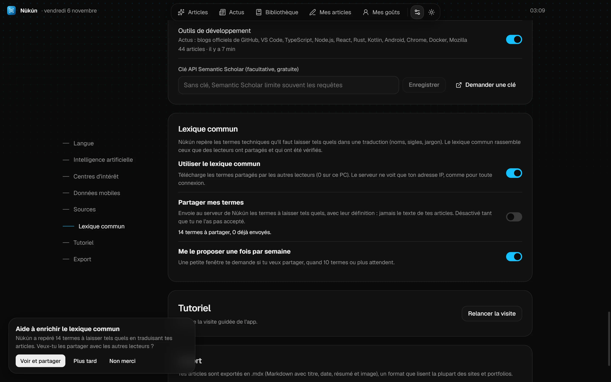

Version 1.0.2 Mise à jour majeure
Novembre 2026
Un traducteur intégré, sans clé ni compte
Nùkún n'a plus besoin d'une clé Google ni d'une IA installée pour traduire. Un petit traducteur de 113 Mo se télécharge une seule fois, quand tu cliques sur « Activer », puis travaille sur ton ordinateur, même hors ligne. Il n'utilise qu'un cœur du processeur et se décharge quand tu ne lis plus : ton PC ne ralentit pas. En attendant, les articles restent dans leur langue d'origine.

- Anglais et français avec le traducteur de base. Un pack facultatif de 912 Mo ajoute l'allemand, l'espagnol, le portugais, le russe, le japonais et le chinois.
- Les termes du lexique sont protégés. Les noms, sigles et jargon à laisser tels quels ne passent plus par le modèle, ni les formules.
- Aide du serveur, facultative. Si tu la coches, les phrases que le petit traducteur rate sont corrigées par Gemini via le serveur de Nùkún. Seules ces phrases sont envoyées, et les termes repérés enrichissent le lexique commun.
- Claude, Gemini et Ollama restent disponibles dans « Options avancées », pour ceux qui ont déjà une clé ou un abonnement.
Pour le détail, voir l'aide et la page Confidentialité.
Le lexique commun
Quand Nùkún traduit un article, certains termes ne doivent pas être traduits : les noms, les sigles, le jargon que les spécialistes laissent tel quel. Nùkún les repère et les retient. Désormais, ceux que des lecteurs choisissent de partager, une fois vérifiés, servent aussi à tous les autres.

- Téléchargé par défaut. Les termes publiés aident à traduire de façon régulière. Un interrupteur dans Réglages, Lexique commun, le coupe.
- Partage facultatif, désactivé tant que tu n'as pas dit oui. Une petite fenêtre te le propose au plus une fois par semaine, à partir de 10 termes, avec la liste complète avant tout envoi. Jamais le texte de tes articles, tes notes ni ton nom.
- Vérifié, pas un dictionnaire. Chaque terme est contrôlé par une IA, puis publié seulement si plusieurs lecteurs différents l'ont envoyé. Les mots courants qui ont une traduction n'y entrent pas.
- Pour les deux langues. Un terme partagé par un lecteur français peut servir aux lecteurs anglais, avec une définition écrite pour eux.
Pour le détail, voir l'aide et la page Confidentialité.
Claude seulement si tu l'autorises
Le traducteur intégré est le mode par défaut. Ton abonnement Claude n'est utilisé que si tu choisis un mode qui le prévoit (Hybride, Mon abonnement Claude ou Automatique), et chacun le dit sur sa carte. Les installations qui avaient l'ancien réglage par défaut passent sur le traducteur intégré.
Une traduction plus fine
L'IA reçoit maintenant le sens de chaque terme du glossaire et ne l'applique que là où le mot a ce sens : un mot technique laissé tel quel dans un contexte reste traduit quand il est employé au sens courant.
Et aussi
- La page Articles s'appelle « Ton fil de lecture », puisque ton fil n'est pas limité à la science.
- Des listes déroulantes aux couleurs de l'app, utilisables au clavier.